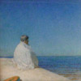
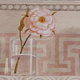

Contact

Joerij Jaroslavovitsj Matvyjtsjoek
+38098 696-65-59
uuuram@gmail.com
Studeerde aan de Staatsschool voor Kunst en aan het Staatsinstituut voor Kunst te Kiev genaamd naar T.G. Sjevtsjenko, richting muurschilderkunst. Ik werk met verschillende technieken: muurschilderijen, glasramen, mozaïeken, reliëfs, enz., en ik ontwerp ook interieurs. Lid van de Unie van designers van Oekraïne.

Irina Jevgenievna Ganina
+38067 439-33-38
Studeerde aan de Staatsschool voor Kunst en aan het Staatsinstituut voor Kunst te Kiev genaamd naar T.G. Sjevtsjenko, richting restauratie- en schilderkunsttechnieken. Heb als restaurateur van schilderwerken en keramiek gewerkt. Tegenwoordig maak ik polychrome schilderijen op hout, landschaps- en muurschilderijen.
Valerij Vladimirovitsj Vasiliev
+38098 041-42-33
Studeerde aan de Basisschool voor Kunst te Kiev en aan de Nationale Academie voor Beeldende Kunst en Architectuur, richting restauratie van schilderijen en muurschilderijen. Ik maak muurschilderijen en glasramen.